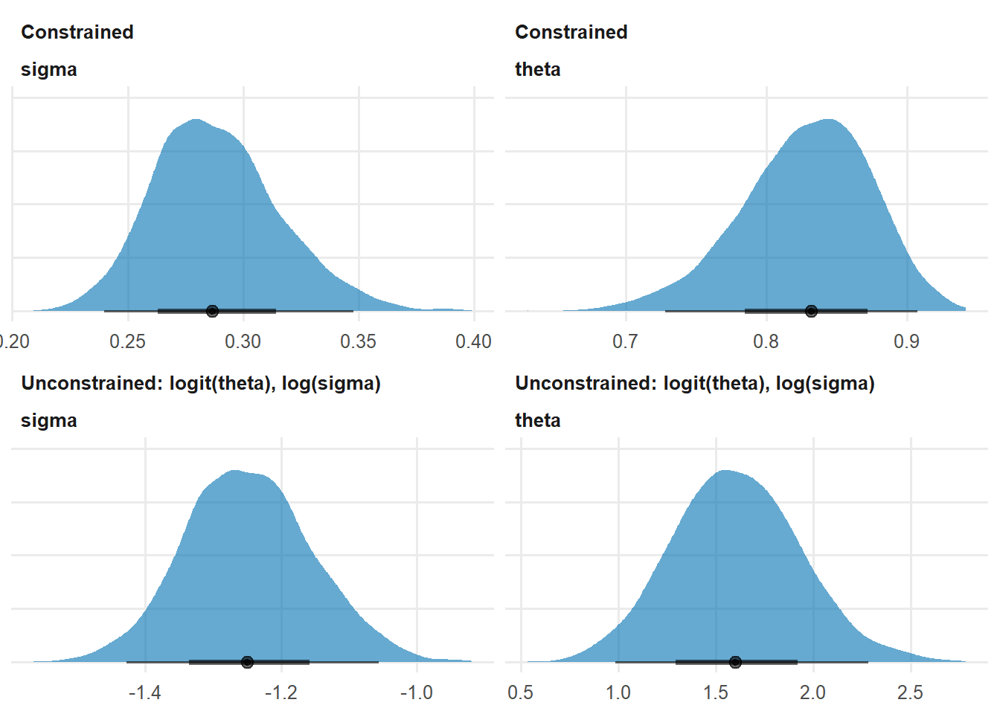
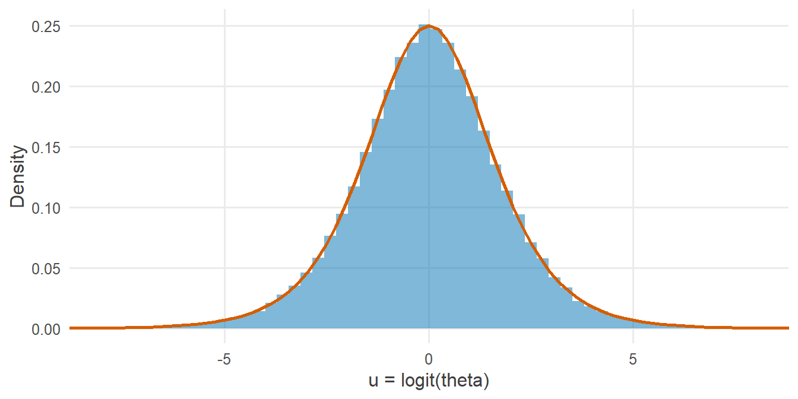

library(tidyverse)
library(cmdstanr)
library(posterior)
library(tidybayes)
source("R/theme.R")
source("R/utils.R")第 3 章 数据类型与约束
vector、array、matrix 各有什么用？为什么约束要写在声明里？约束怎样把参数变换到无约束空间？
R 是一门“宽容”的语言：一个数值向量既可以当作整数用，也可以当作实数用；长度不对时常常悄悄循环补齐。Stan 则完全相反：每个变量都必须声明类型、维度和取值范围。
这种严格不是繁文缛节。类型告诉 Stan 能对变量做哪些运算，维度让错误在第一时间暴露，约束则直接决定了采样器在什么空间里工作。
1 本章要回答的问题
vector、array、matrix有什么区别？什么时候用哪一个？- 为什么约束要写在声明里，而不是在模型里检查？
- 约束是如何被变换到无约束空间的？这和采样有什么关系？
2 公式卡片
本章的模型同时包含一个概率参数和一个正数参数，正好用来观察两种最常见的约束。
正确率与反应时
\[ \begin{aligned} \text{correct}_i &\sim \operatorname{Bernoulli}(\theta), & \theta &\in (0, 1) \\ \text{rt}_i &\sim \operatorname{LogNormal}(\mu,\ \sigma), & \sigma &> 0 \\[4pt] \theta &\sim \operatorname{Beta}(2,\ 2) \\ \mu &\sim \operatorname{Normal}(6,\ 1) \\ \sigma &\sim \operatorname{Exponential}(1) \end{aligned} \]
这里有三种不同性质的量：
- \(\text{correct}_i\) 只能取 0 或 1，是整数；
- \(\text{rt}_i\) 是正的实数；
- \(\theta\) 是 \((0, 1)\) 之间的概率，\(\sigma\) 是正数，\(\mu\) 可以取任意实数。
Stan 的类型系统正是用来精确描述这些差别的。
3 模拟数据
研究情境：一名被试完成 60 次判断任务，记录每次是否正确以及反应时。
set.seed(2026)
N <- 60
theta_true <- 0.8 # probability of a correct response
mu_true <- log(600) # mean of log RT (median RT = 600 ms)
sigma_true <- 0.3 # SD of log RT
sim_data <- tibble(
correct = rbinom(N, size = 1, prob = theta_true),
rt = round(rlnorm(N, meanlog = mu_true, sdlog = sigma_true))
)
sim_data |>
summarise(prop_correct = mean(correct), median_rt = median(rt), min_rt = min(rt))#> # A tibble: 1 × 3
#> prop_correct median_rt min_rt
#> <dbl> <dbl> <dbl>
#> 1 0.85 582. 3504 Stan 代码
// Chapter 3: Data types and constraints
//
// correct_i ~ Bernoulli(theta) theta in (0, 1)
// rt_i ~ LogNormal(mu, sigma) sigma > 0
data {
int<lower=0> N; // number of trials
array[N] int<lower=0, upper=1> correct; // 1 = correct response, 0 = error
vector<lower=0>[N] rt; // reaction time (ms), must be positive
}
parameters {
real<lower=0, upper=1> theta; // probability of a correct response
real mu; // mean of log reaction time
real<lower=0> sigma; // SD of log reaction time
}
model {
// Priors
target += beta_lpdf(theta | 2, 2);
target += normal_lpdf(mu | 6, 1);
target += exponential_lpdf(sigma | 1);
// Likelihood
target += bernoulli_lpmf(correct | theta);
target += lognormal_lpdf(rt | mu, sigma);
}
generated quantities {
real median_rt = exp(mu); // median reaction time (ms)
}4.1 数据的类型
data {
int<lower=0> N; // number of trials
array[N] int<lower=0, upper=1> correct; // 1 = correct response, 0 = error
vector<lower=0>[N] rt; // reaction time (ms), must be positive
}correct声明为array[N] int<lower=0, upper=1>：整数只能存放在array中，vector只能装实数。bernoulli_lpmf要求第一个参数是整数，所以这里必须用整数数组。rt声明为vector<lower=0>[N]：反应时是正的实数。约束<lower=0>写在vector后面、维度前面。
4.2 参数的约束
parameters {
real<lower=0, upper=1> theta; // probability of a correct response
real mu; // mean of log reaction time
real<lower=0> sigma; // SD of log reaction time
}三个参数对应三种取值范围：\(\theta \in (0, 1)\)、\(\mu \in \mathbb{R}\)、\(\sigma \in (0, \infty)\)。它们的声明与公式卡片中的范围一一对应。
4.3 Stan 的基本类型一览
| 类型 | 元素 | 支持线性代数运算 | 典型用途 |
|---|---|---|---|
int / real |
单个整数 / 实数 | — | 样本量、单个参数 |
vector[N] |
实数（列向量） | 是 | 连续型结果变量、回归系数 |
row_vector[N] |
实数（行向量） | 是 | 矩阵的一行 |
matrix[N, K] |
实数 | 是 | 设计矩阵 \(X\) |
array[N] int |
整数 | 否 | 计数、0/1 结果、组索引 |
array[N] real |
实数 | 否 | 少数函数的输出（如 normal_rng） |
array[J] vector[K] |
每个元素是一个向量 | 元素级是 | 每组一个系数向量 |
另外还有一组自带约束的类型，它们本身就规定了取值范围：
| 类型 | 含义 | 典型用途 |
|---|---|---|
simplex[K] |
\(K\) 个非负数，和为 1 | 类别概率、混合比例 |
ordered[K] |
严格递增 | 有序 logistic 的切点 |
positive_ordered[K] |
为正且严格递增 | 有序的正数参数 |
corr_matrix[K] / cholesky_factor_corr[K] |
相关矩阵 / 其 Cholesky 因子 | 随机效应的相关结构 |
cov_matrix[K] |
协方差矩阵 | 多元正态的协方差 |
4.4 R 与 Stan 的类型对应
| R 端 | Stan 端声明 |
|---|---|
数值向量 c(1.2, 3.4) |
vector[N] 或 array[N] real |
整数或 0/1 向量 c(0L, 1L) |
array[N] int |
矩阵 matrix(...) |
matrix[N, K] |
单个数值 100 |
int 或 real |
| 因子 | 先转成 as.integer()，再声明为 array[N] int<lower=1, upper=J> |
5 R 端运行
mod_constraints <- cmdstan_model("stan/ch03_constraints.stan")
stan_data <- list(
N = nrow(sim_data),
correct = sim_data$correct,
rt = sim_data$rt
)
fit_constraints <- mod_constraints$sample(
data = stan_data, seed = 2026, chains = 4, parallel_chains = 4, refresh = 0
)#> Running MCMC with 4 parallel chains...#> Chain 1 finished in 0.0 seconds.
#> Chain 2 finished in 0.0 seconds.
#> Chain 3 finished in 0.0 seconds.
#> Chain 4 finished in 0.0 seconds.
#>
#> All 4 chains finished successfully.
#> Mean chain execution time: 0.0 seconds.
#> Total execution time: 0.4 seconds.6 后验整理与可视化
fit_constraints$summary(c("theta", "mu", "sigma", "median_rt"))#> # A tibble: 4 × 10
#> variable mean median sd mad q5 q95 rhat ess_bulk
#> <chr> <dbl> <dbl> <dbl> <dbl> <dbl> <dbl> <dbl> <dbl>
#> 1 theta 0.828 0.832 0.0456 0.0460 0.748 0.896 1.00 3732.
#> 2 mu 6.38 6.38 0.0373 0.0368 6.32 6.44 1.00 3886.
#> 3 sigma 0.288 0.286 0.0272 0.0268 0.247 0.337 1.00 3644.
#> 4 median_rt 590. 590. 22.0 21.8 554. 626. 1.00 3886.
#> # ℹ 1 more variable: ess_tail <dbl>6.1 约束空间与无约束空间
采样器实际上并不直接在 \(\theta\) 和 \(\sigma\) 上移动。Stan 先把它们变换到无约束的实数轴上，采样器在那里工作，再把结果变换回来。对这两个参数而言，变换分别是：
\[ u_\theta = \operatorname{logit}(\theta) = \log\frac{\theta}{1 - \theta}, \qquad u_\sigma = \log(\sigma) \]
把后验抽样做同样的变换，就能看到采样器“眼中”的后验：
draws_constrained <- fit_constraints$draws(c("theta", "mu", "sigma"), format = "df")
draws_constrained |>
as_tibble() |>
transmute(theta, logit_theta = qlogis(theta), sigma, log_sigma = log(sigma)) |>
head()#> # A tibble: 6 × 4
#> theta logit_theta sigma log_sigma
#> <dbl> <dbl> <dbl> <dbl>
#> 1 0.872 1.92 0.272 -1.30
#> 2 0.852 1.75 0.291 -1.24
#> 3 0.855 1.77 0.288 -1.25
#> 4 0.840 1.66 0.294 -1.22
#> 5 0.703 0.863 0.296 -1.22
#> 6 0.900 2.20 0.259 -1.35cmdstanr 也提供了 $unconstrain_draws() 方法，可以直接取出 Stan 内部的无约束值。它需要在编译时加上 compile_model_methods = TRUE，结果与上面手工变换的完全相同。
bind_rows(
tibble(value = draws_constrained$theta, param = "theta", scale = "Constrained"),
tibble(value = draws_constrained$sigma, param = "sigma", scale = "Constrained"),
tibble(value = qlogis(draws_constrained$theta), param = "theta", scale = "Unconstrained: logit(theta), log(sigma)"),
tibble(value = log(draws_constrained$sigma), param = "sigma", scale = "Unconstrained: logit(theta), log(sigma)")
) |>
ggplot(aes(x = value)) +
stat_halfeye(fill = f2s_colors[["post"]], alpha = 0.6, normalize = "panels") +
facet_wrap(scale ~ param, scales = "free") +
labs(x = NULL, y = NULL) +
theme(axis.text.y = element_blank())
在约束尺度上，\(\theta\) 的后验被挤在 1 的左侧，略有偏斜；在无约束尺度上，它变得更对称，也没有了边界。采样器在后一种空间中移动要容易得多。
7 为什么这样写
7.1 为什么约束要写在声明里？
假设我们不写约束，而是在 model 块里“检查”：
parameters {
real sigma;
}
model {
if (sigma <= 0) reject("sigma must be positive");
...
}这样写在语法上是允许的，却会给采样器带来两个问题：
- 边界是一堵“看不见的墙”。采样器在实数轴上自由移动，只有撞到 \(\sigma \le 0\) 时才发现此路不通。每次撞墙，这一步就被拒绝，计算白白浪费。
- 对数密度在边界处不连续。HMC 依靠梯度判断方向，而
reject造成的断崖没有梯度可言。当后验靠近边界时（比如层级模型中组间标准差接近 0），采样器会频繁撞墙，效率急剧下降。
把约束写进声明，Stan 会自动做三件事：
- 把参数变换到无约束空间，让采样器永远不会走出合法范围；
- 在对数密度中加上雅可比调整，保证变换前后描述的是同一个分布；
- 在输出时把值变换回来，你看到的永远是原始尺度上的参数。
7.2 变换与雅可比调整
以 \(\sigma > 0\) 为例。Stan 令 \(\sigma = \exp(u)\)，在 \(u \in \mathbb{R}\) 上采样。由于 \(u\) 上的一小段区间会被 \(\exp\) 拉伸或压缩，概率密度也要相应调整：
\[ p_u(u) = p_\sigma\big(\exp(u)\big) \cdot \left| \frac{d\sigma}{du} \right| = p_\sigma\big(\exp(u)\big) \cdot \exp(u) \]
取对数后，Stan 在 target 上自动加了 \(\log\left|\frac{d\sigma}{du}\right| = u\) 这一项。这就是雅可比调整。你在 model 块里写的先验，始终是关于 \(\sigma\) 本身的；变换和调整由 Stan 处理。
常见约束的变换：
| 声明 | 变换（无约束值 \(u\) → 参数） |
|---|---|
<lower=a> |
\(a + \exp(u)\) |
<upper=b> |
\(b - \exp(u)\) |
<lower=a, upper=b> |
\(a + (b - a)\,\operatorname{logit}^{-1}(u)\) |
simplex[K] |
一种保证非负且和为 1 的变换，\(K\) 维单纯形只需要 \(K-1\) 个无约束值 |
ordered[K] |
第一个元素不变，其后依次加上 \(\exp(u_k)\) |
第 4 章会看到，这个雅可比项确实出现在 Stan 计算的对数密度里。
7.3 为什么数据也要声明约束？
数据上的约束不会被变换，它只做检查：读入数据时，Stan 逐个核对每个值是否满足声明。
把一个负的反应时传进去：
bad_data <- stan_data
bad_data$rt[2] <- -600
fit_bad <- mod_constraints$sample(data = bad_data, chains = 1, refresh = 0)#> Running MCMC with 1 chain...#> Chain 1 Exception: ch03_constraints_model_namespace::ch03_constraints_model: rt[2] is -600, but must be greater than or equal to 0.000000 (in 'C:/Users/wmj/AppData/Local/Temp/RtmpSW4Z3v/model-612442755e72.stan', line 9, column 2 to column 24)#> Warning: Chain 1 finished unexpectedly!#> Warning: No chains finished successfully. Unable to retrieve the fit.Stan 拒绝运行，并明确指出 rt[2] is -600, but must be greater than or equal to 0。没有这个约束，lognormal_lpdf 遇到负值同样会出错，但错误信息会出现在采样过程中，定位起来困难得多。
数据约束的价值在于：把你对数据的认识写进程序，让错误在最早的时刻、以最清楚的方式暴露出来。
7.4 为什么整数要特别小心？
如果把一个非整数传给整数数组：
bad_data2 <- stan_data
bad_data2$correct[1] <- 0.5
fit_bad2 <- mod_constraints$sample(data = bad_data2, chains = 1, refresh = 0)#> Warning: A non-integer value was supplied for 'correct'! It will be truncated
#> to an integer.#> Running MCMC with 1 chain...#> Chain 1 Informational Message: The current Metropolis proposal is about to be rejected because of the following issue:#> Chain 1 Exception: lognormal_lpdf: Scale parameter is inf, but must be positive finite! (in 'C:/Users/wmj/AppData/Local/Temp/RtmpSW4Z3v/model-612442755e72.stan', line 26, column 2 to column 43)#> Chain 1 If this warning occurs sporadically, such as for highly constrained variable types like covariance matrices, then the sampler is fine,#> Chain 1 but if this warning occurs often then your model may be either severely ill-conditioned or misspecified.#> Chain 1#> Chain 1 Informational Message: The current Metropolis proposal is about to be rejected because of the following issue:#> Chain 1 Exception: lognormal_lpdf: Scale parameter is inf, but must be positive finite! (in 'C:/Users/wmj/AppData/Local/Temp/RtmpSW4Z3v/model-612442755e72.stan', line 26, column 2 to column 43)#> Chain 1 If this warning occurs sporadically, such as for highly constrained variable types like covariance matrices, then the sampler is fine,#> Chain 1 but if this warning occurs often then your model may be either severely ill-conditioned or misspecified.#> Chain 1#> Chain 1 Informational Message: The current Metropolis proposal is about to be rejected because of the following issue:#> Chain 1 Exception: lognormal_lpdf: Scale parameter is inf, but must be positive finite! (in 'C:/Users/wmj/AppData/Local/Temp/RtmpSW4Z3v/model-612442755e72.stan', line 26, column 2 to column 43)#> Chain 1 If this warning occurs sporadically, such as for highly constrained variable types like covariance matrices, then the sampler is fine,#> Chain 1 but if this warning occurs often then your model may be either severely ill-conditioned or misspecified.#> Chain 1#> Chain 1 Informational Message: The current Metropolis proposal is about to be rejected because of the following issue:#> Chain 1 Exception: lognormal_lpdf: Scale parameter is inf, but must be positive finite! (in 'C:/Users/wmj/AppData/Local/Temp/RtmpSW4Z3v/model-612442755e72.stan', line 26, column 2 to column 43)#> Chain 1 If this warning occurs sporadically, such as for highly constrained variable types like covariance matrices, then the sampler is fine,#> Chain 1 but if this warning occurs often then your model may be either severely ill-conditioned or misspecified.#> Chain 1#> Chain 1 Informational Message: The current Metropolis proposal is about to be rejected because of the following issue:#> Chain 1 Exception: lognormal_lpdf: Scale parameter is inf, but must be positive finite! (in 'C:/Users/wmj/AppData/Local/Temp/RtmpSW4Z3v/model-612442755e72.stan', line 26, column 2 to column 43)#> Chain 1 If this warning occurs sporadically, such as for highly constrained variable types like covariance matrices, then the sampler is fine,#> Chain 1 but if this warning occurs often then your model may be either severely ill-conditioned or misspecified.#> Chain 1#> Chain 1 finished in 0.0 seconds.cmdstanr 只给出一条警告，然后把 0.5 截断为 0，模型照常运行。这种静默的转换很容易被忽略。在 R 端准备数据时，养成显式转换的习惯：as.integer()，并在转换前确认数据确实是整数。
7.5 vector 还是 array？
一个简单的判断标准：
- 需要做线性代数（加减乘、矩阵乘法、
dot_product）→vector、row_vector、matrix； - 存放整数 → 只能用
array[N] int； - 存放一组结构相同的对象（比如每组一个向量）→
array[J] vector[K]。
第 5 章的“常见错误”中已经看到：把 x 声明为 array[N] real 之后写 beta * x，编译器会报错，因为数组不支持算术运算。
8 常见错误
| 错误写法 | 后果 | 正确写法 |
|---|---|---|
vector[N] y; 存放 0/1 结果，再用 bernoulli_lpmf(y | ...) |
编译错误：bernoulli_lpmf 需要整数 |
array[N] int<lower=0, upper=1> y; |
real sigma; 然后在 model 中 reject 负值 |
能运行，但采样效率差，靠近边界时问题严重 | real<lower=0> sigma; |
把非整数传给 array[N] int |
只有一条警告，数值被静默截断 | R 端显式检查并 as.integer() |
约束写错位置：vector[N]<lower=0> y; |
编译错误 | vector<lower=0>[N] y; |
概率参数忘记上下界：real theta; |
采样器可能提议 \(\theta > 1\) 或 \(< 0\)，似然无法计算 | real<lower=0, upper=1> theta; |
| 因子直接传入 Stan | 报错或得到意外的编码 | as.integer(factor)，声明为 array[N] int<lower=1, upper=J> |
9 练习
练习 1 为变量选择类型
为下面每个量写出 Stan 声明：(a) 每天的门诊人数，共 \(T\) 天；(b) 一个 \(N \times K\) 的设计矩阵；(c) 某个分类变量 \(K\) 个类别的概率；(d) 有序 logistic 回归中的 \(K-1\) 个切点；(e) 每个观测所属的学校编号，共 \(J\) 所学校。
提示参考答案
array[T] int<lower=0> visits; // (a) counts are non-negative integers
matrix[N, K] X; // (b) design matrix
simplex[K] p; // (c) probabilities sum to 1
ordered[K - 1] cutpoints; // (d) cutpoints must increase
array[N] int<lower=1, upper=J> school; // (e) group index(c)、(d) 使用自带约束的类型，Stan 会自动处理“和为 1”与“严格递增”的变换，你不需要自己写任何检查代码。
练习 2 Beta(1, 1) 在 logit 尺度上长什么样？
如果 \(\theta \sim \operatorname{Beta}(1, 1)\)，即 \((0, 1)\) 上的均匀分布，那么采样器实际工作的 \(u = \operatorname{logit}(\theta)\) 服从什么分布？用模拟验证。
提示参考答案
set.seed(2026)
u <- qlogis(runif(1e5))
ggplot(tibble(u = u), aes(x = u)) +
geom_histogram(aes(y = after_stat(density)), bins = 80,
fill = f2s_colors[["post"]], alpha = 0.5) +
stat_function(fun = dlogis, colour = f2s_colors[["truth"]], linewidth = 1) +
coord_cartesian(xlim = c(-8, 8)) +
labs(x = "u = logit(theta)", y = "Density")
\(u\) 服从标准 logistic 分布。这说明：“均匀”是相对于尺度而言的。在 \(\theta\) 尺度上均匀的先验，在 logit 尺度上是一个中间高、两边低的分布。第 8 章会看到反过来的情况：在 logit 尺度上“很平坦”的先验，换算到概率尺度上会变得非常不平坦。
练习 3 数据约束能替代数据清洗吗？
数据约束能检查出哪些问题？检查不出哪些问题？
提示参考答案
能检查出的：超出合法范围的值（负的反应时、大于 1 的比例、超出组数的组编号）、维度不匹配（长度与 N 不符）、缺失的变量。
检查不出的：在合法范围内但不合理的值（比如反应时 50 毫秒，往往意味着被试提前按键）、录入错误（把 650 录成 560）、缺失值的编码问题（比如用 999 表示缺失，而 999 恰好满足 <lower=0>）。
数据约束是最后一道防线，而不是数据清洗的替代品。在 R 端用 tidyverse 检查和清洗数据，仍然是必要的。
练习 4 依赖于数据的边界
反应时通常包含一段“非决策时间”（比如知觉编码和按键动作），它不可能超过最快的那次反应。请写一个移位对数正态模型：\(\text{rt}_i - \text{ndt} \sim \operatorname{LogNormal}(\mu, \sigma)\)，并让 \(\text{ndt}\) 的上界等于数据中的最小反应时。
提示参考答案
参考写法保存在 stan/ch03_ex4_shifted.stan：
// Chapter 3, Exercise 4: shifted lognormal with a data-dependent bound
//
// rt_i - ndt ~ LogNormal(mu, sigma), 0 < ndt < min(rt)
data {
int<lower=0> N; // number of trials
vector<lower=0>[N] rt; // reaction time (ms)
}
transformed data {
real rt_min = min(rt); // the shift cannot exceed the fastest response
}
parameters {
real<lower=0, upper=rt_min> ndt; // non-decision time (ms)
real mu; // mean of log(rt - ndt)
real<lower=0> sigma; // SD of log(rt - ndt)
}
model {
// Priors
target += normal_lpdf(ndt | 200, 100);
target += normal_lpdf(mu | 6, 1);
target += exponential_lpdf(sigma | 1);
// Likelihood
target += lognormal_lpdf(rt - ndt | mu, sigma);
}关键在于 real<lower=0, upper=rt_min> ndt;：约束的边界可以是 data 或 transformed data 中的量。这样 \(\text{rt}_i - \text{ndt}\) 永远为正，lognormal_lpdf 总能计算。
用一组带有 250 毫秒非决策时间的数据检验：
set.seed(2026)
ndt_true <- 250
rt_shifted <- ndt_true + rlnorm(200, meanlog = log(400), sdlog = 0.4)
mod_shifted <- cmdstan_model("stan/ch03_ex4_shifted.stan")
fit_shifted <- mod_shifted$sample(
data = list(N = length(rt_shifted), rt = rt_shifted),
seed = 2026, chains = 4, parallel_chains = 4, refresh = 0
)#> Running MCMC with 4 parallel chains...#> Chain 1 finished in 0.1 seconds.
#> Chain 2 finished in 0.1 seconds.
#> Chain 3 finished in 0.1 seconds.
#> Chain 4 finished in 0.1 seconds.
#>
#> All 4 chains finished successfully.
#> Mean chain execution time: 0.1 seconds.
#> Total execution time: 0.3 seconds.fit_shifted$summary(c("ndt", "mu", "sigma"))#> # A tibble: 3 × 10
#> variable mean median sd mad q5 q95 rhat ess_bulk
#> <chr> <dbl> <dbl> <dbl> <dbl> <dbl> <dbl> <dbl> <dbl>
#> 1 ndt 268. 275. 45.5 42.2 183. 331. 1.00 631.
#> 2 mu 5.94 5.93 0.130 0.128 5.73 6.16 1.00 647.
#> 3 sigma 0.424 0.424 0.0560 0.0578 0.333 0.517 1.00 644.
#> # ℹ 1 more variable: ess_tail <dbl>ndt 的后验区间覆盖了真值 250，但相当宽。原因是 ndt 与 mu 之间此消彼长：非决策时间估得长一些，剩余的 \(\text{rt} - \text{ndt}\) 就短一些，\(\mu\) 相应变小，两种组合都能解释数据。这类有边界的参数，后验常常靠近边界，此时更要依赖 Stan 的约束变换，而不是 reject。
10 小结
- 类型决定能做哪些运算：线性代数用
vector/matrix，整数只能放在array中。 - 数据约束是检查：让错误在读入数据时就以最清楚的方式暴露出来。
- 参数约束是变换：Stan 把参数映射到无约束空间采样，自动加上雅可比调整，再映射回来。
- 用约束代替
reject：前者让采样器永远在合法空间里平滑移动，后者让它不断撞墙。
11 延伸
- 下一章：第 4 章
target +=与~，看 Stan 到底在累加什么，以及雅可比项如何出现在其中。 - 约束与变换在层级模型中尤为关键：组间标准差 \(\tau\) 常常靠近 0，第 11 章会看到这带来的问题。
12 参考资料
- Stan Reference Manual 的 Data Types and Declarations 一章列出了全部类型及其声明方式；Constraint Transforms 一章给出了每种约束的变换和雅可比项 (Stan Development Team, 2026b)。
- Stan Functions Reference 中 Bernoulli Distribution 与 Lognormal Distribution 两节说明了本章用到的分布函数 (Stan Development Team, 2026a)。
- 变量变换与雅可比调整的统计背景，可参考 Bayesian Data Analysis 第 2 章关于先验在不同参数化下如何变化的讨论 (Gelman 等, 2013)。
Gelman, A., Carlin, J. B., Stern, H. S., Dunson, D. B., Vehtari, A., & Rubin, D. B. (2013). Bayesian Data Analysis (3 版). CRC Press.
Stan Development Team. (2026a). Stan Functions Reference (Version 2.40). https://mc-stan.org/docs/functions-reference/
Stan Development Team. (2026b). Stan Reference Manual (Version 2.40). https://mc-stan.org/docs/reference-manual/